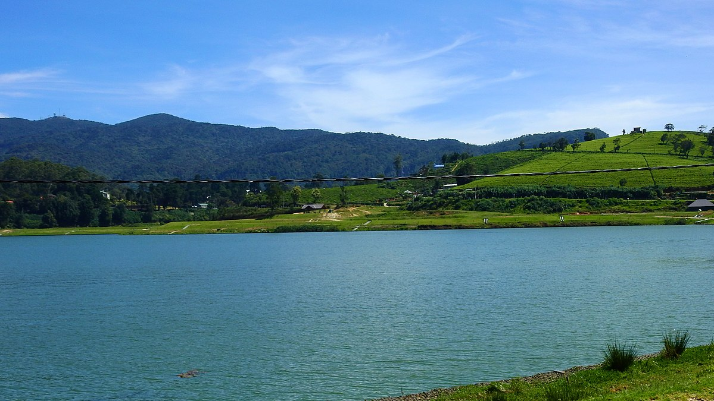
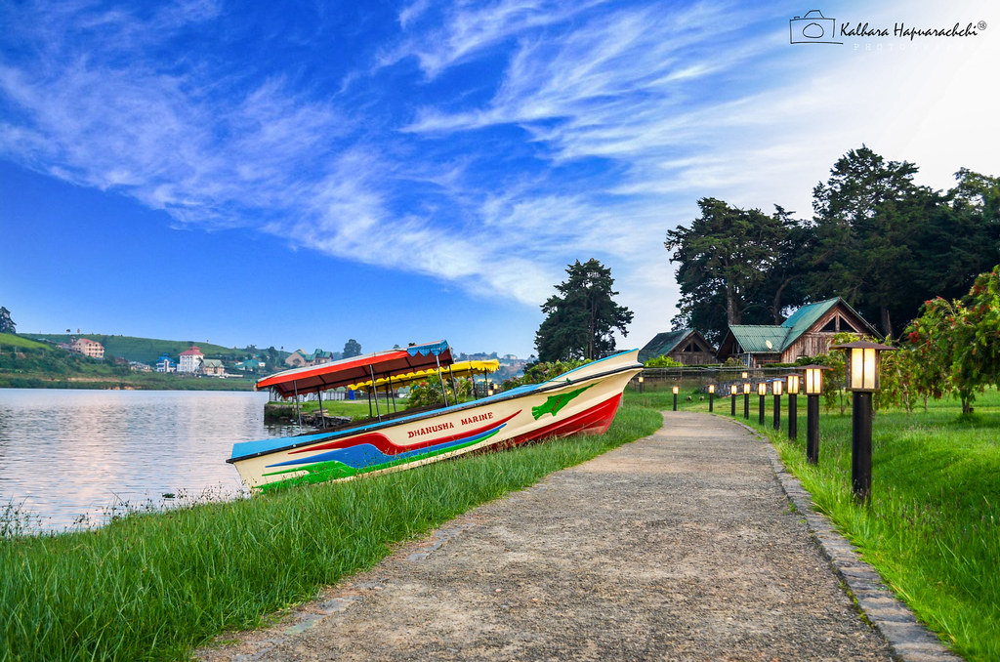
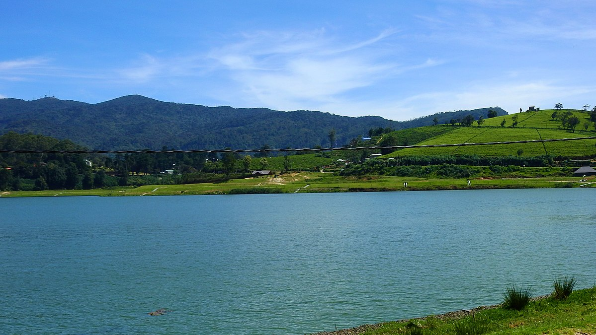
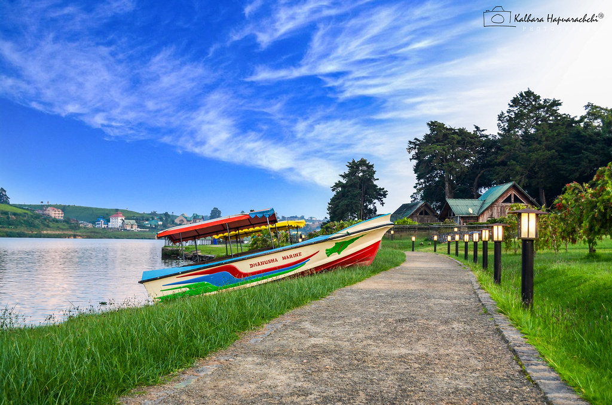

The Central Province (Sinhala: මධ්යම පළාත Madhyama Paḷāta, Tamil: மத்திய மாகாணம் Madhdhiya Mākāṇam) is one of the nine provinces of Sri Lanka, the first level administrative division of the country. (The provinces have existed since the 19th century but did not have any legal status until 1987 when the 13th Amendment to the Constitution of Sri Lanka established provincial councils.) The Central Province is primarily in the central mountainous terrain of Sri Lanka. It is the 6th largest province by area and is home to 2.5 million people. It is bordered by North Central Province to the north, Uva Province to the east, North Western Province to the west and Sabaragamuwa Province to the south and west. The province's capital is Kandy. The cities of Matale and Nuwara Eliya are in the Central Province. The province is famous for its production of Ceylon tea, planted by the British in the 1860s after a devastating disease killed all the coffee plantations in the province. The Central Province attracts many tourists, with hill station towns such as Gampola, Hatton and Nuwara Eliya.
The Temple of the Sacred Tooth Relic or Sri Dalada Maligawa,[a] (Sinhala: ශ්රී දළදා මාළිගාව) is a Buddhist temple in Kandy, Sri Lanka. It is located in the royal palace complex of the former Kingdom of Kandy, which houses the relic of the tooth of the Buddha. Since ancient times, the relic has played an important role in local politics because it is believed that whoever holds the relic holds the governance of the country. The relic was historically held by Sinhalese kings. The temple of the tooth is a World Heritage Site mainly due to the temple and the relic.Bhikkhus of the two particular chapters, the Malwathu chapters and Asgiri chapters, conduct daily worship in the inner chamber of the temple. Rituals are performed three times daily: at dawn, at noon and in the evenings. On Wednesdays, there is a symbolic bathing of the relic with a herbal preparation made from scented water and fragrant flowers called Nanumura Mangallaya; this holy water is believed to contain healing powers and is distributed to those present. The temple sustained damage from bombings by Janatha Vimukthi Peramuna in 1989, and by the Liberation Tigers of Tamil Eelam in 1998. However, it was fully restored each time.
 


Lake Gregory sometimes also called Gregory Lake or Gregory Reservoir, is a reservoir in heart of the tea country hill city, Nuwara Eliya, Sri Lanka. Lake Gregory was constructed during the period of British Governor Sir William Gregory in 1873.The lake and the surrounding area make up the Gregory Lake Area.


Hakgala Botanical Garden is one of the five botanical gardens in Sri Lanka. The other four are Peradeniya Botanical Garden, Henarathgoda Botanical Garden, Mirijjawila Botanical Garden and Seetawaka Botanical Garden. It is the second largest botanical garden in Sri Lanka. The garden is contiguous to Hakgala Strict Nature Reserve.